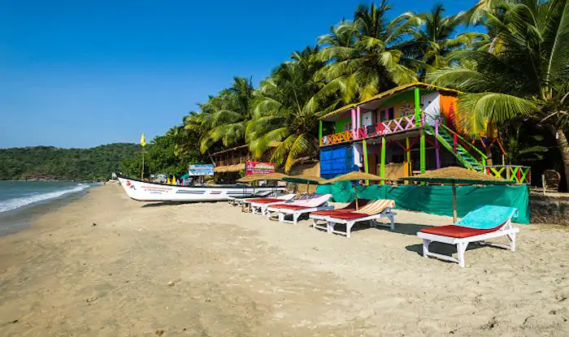

Most visited places
GOA - Ranked the most visited
Tourism is generally focused on the coastal areas of Goa, with decreased tourist activity inland. In 2010, there were more than 2 million tourists reported to have visited Goa, about 1.2 million of whom were from abroad. As of 2013, Goa was a destination of choice for Indian and foreign tourists, particularly Britons and Russians, with limited means who wanted to party. The state was hopeful that changes could be made which would attract a more upscale demographic. Goa stands 6th in the Top 10 Nightlife cities in the world in National Geographic Travel.Notable nightclubs in Goa include Chronicle, Mambos and Sinq. One of the biggest tourist attractions in Goa is water sports. Beaches like Baga and Calangute offer jet-skiing, parasailing, banana boat rides, water scooter rides, and more. Patnem beach in Palolem stood third in CNN Travel's Top 20 Beaches in Asia. Over 450 years of Portuguese rule and the influence of the Portuguese culture presents to visitors to Goa a cultural environment that is not found elsewhere in India. Goa is often described as a fusion between Eastern and Western culture with Portuguese culture having a dominant position in the state be it in its architectural, cultural or social settings. The state of Goa is famous for its excellent beaches, churches, and temples. The Bom Jesus Cathedral, Fort Aguada and a new wax museum on Indian history, culture and heritage in Old Goa are other tourism destinations.